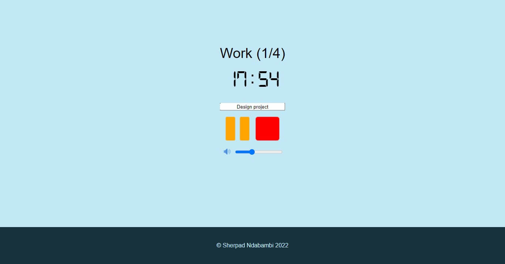
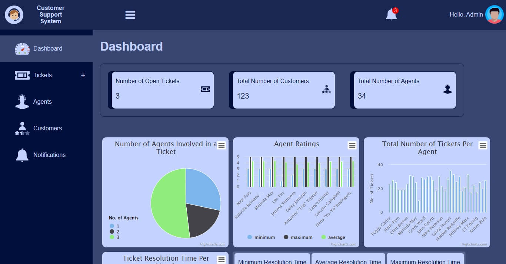
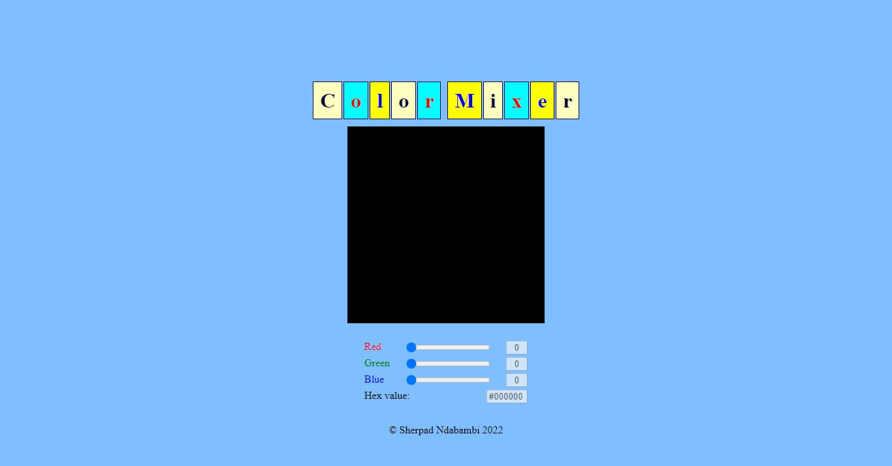
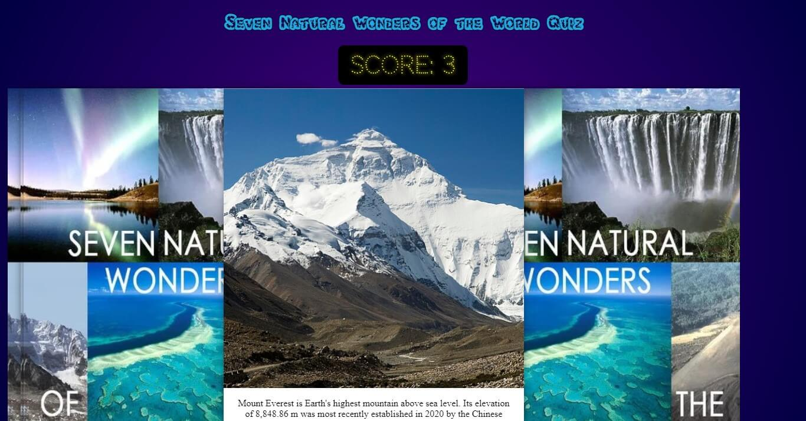
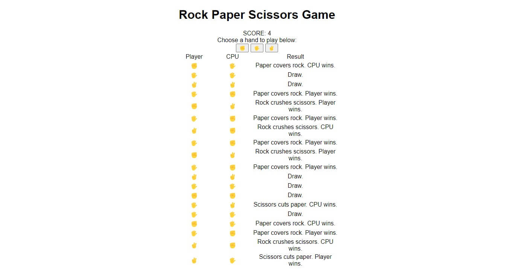
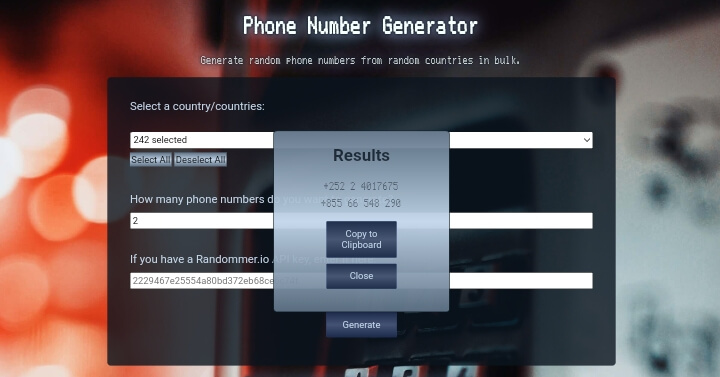
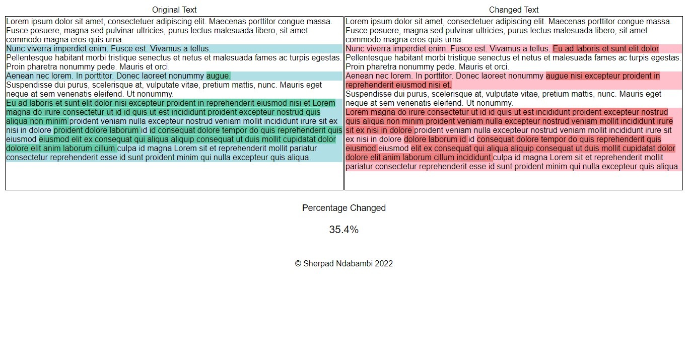

I'm a software engineer and IT professional focused on building practical, reliable solutions across cloud, identity, collaboration, and modern web technologies.
My work sits at the intersection of software development and IT infrastructure. I enjoy taking a problem from idea to implementation—whether that means building a web application, designing cloud architecture, automating workflows, or managing Microsoft 365 and identity environments.
I'm particularly interested in the Microsoft ecosystem, cloud technologies, DevOps, and solutions that make businesses more efficient. I'm constantly learning, experimenting, and turning what I learn into working projects.
This portfolio is a collection of that journey: the things I've built, the technologies I've worked with, and the problems I've enjoyed solving.
CONNECT WITH ME

Timer

CRM Dashboard

Color Mixer

Educational Gaming Site

Rock Paper Scissors

Phone Number Generator

Diffchecker Clone